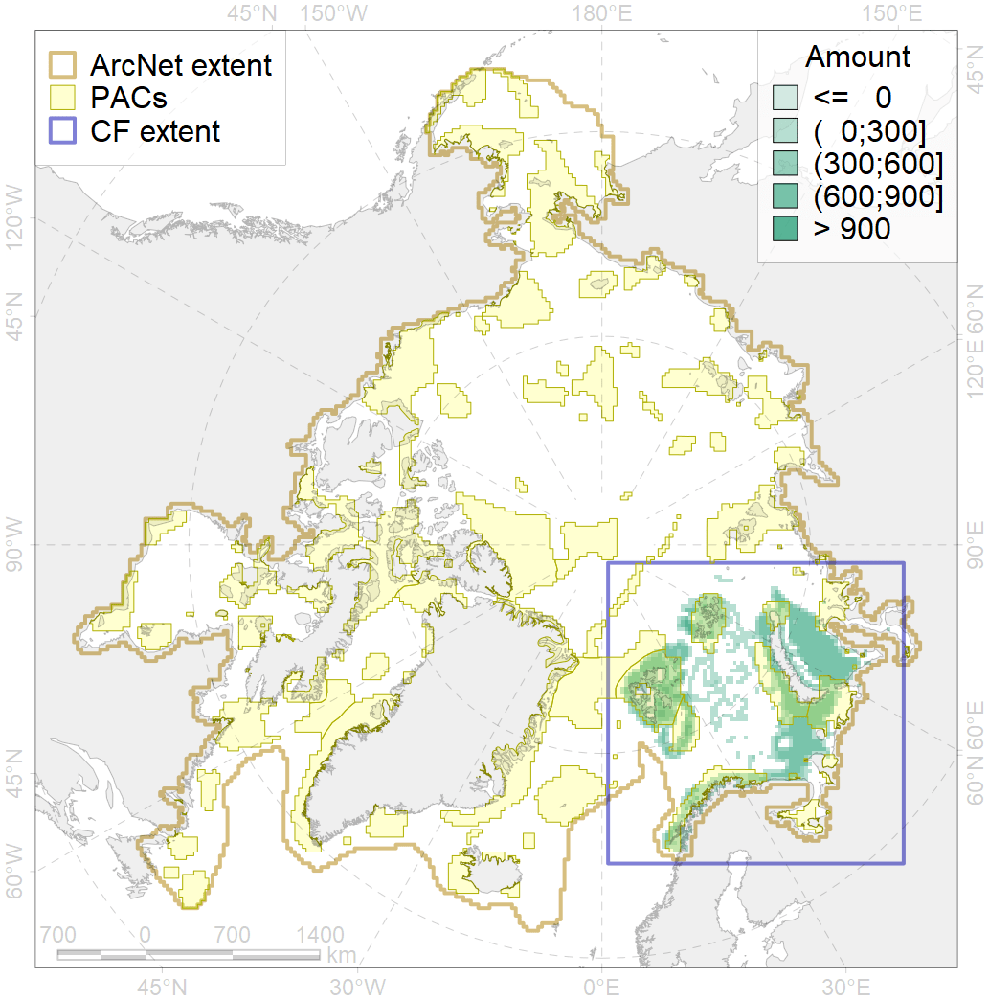
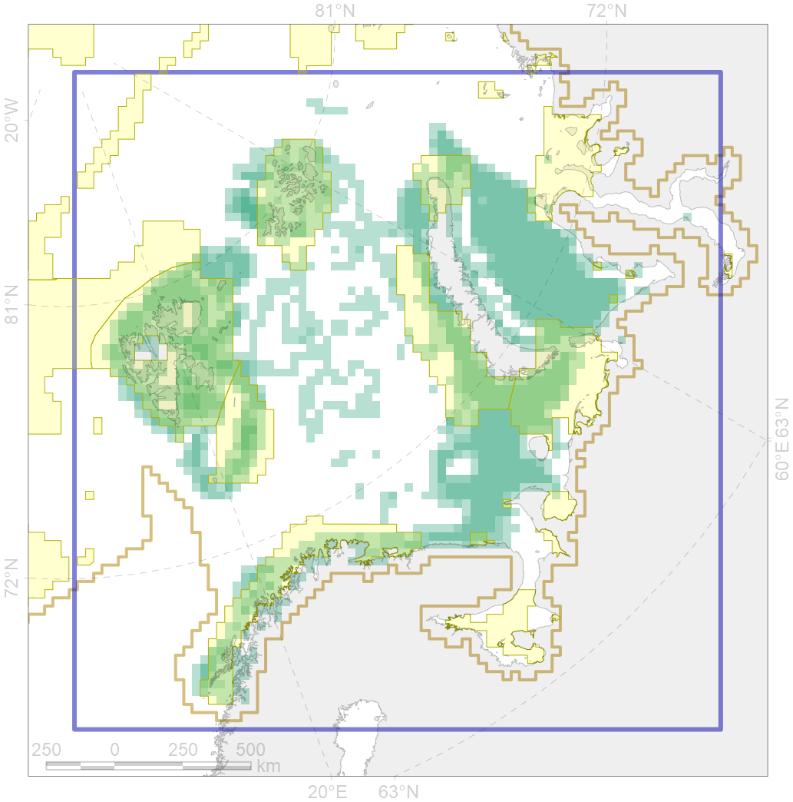

7066

| CF ID | 7066 |
| CF Name | I.1.1.3. Shelf plains |
| Time Period | At least last 100 years |
| Source(s) | Harris et al., 2014; Carmack, Wassmann, 2006 |
| Seasonality | January - December |
| Depth Horizon | |
| Methodology | Data obtained from the literature |
| Author Name | V. Spiridonov, W. Merritt |
| Notes | |
| Conservation Target Set in the Scenario | 0.03684592 |
| Conservation Target Achieved in the Scenario | 0.448 (Scenario: 1215.5%) |
| PAC ID | Proportion in the PAC | Contribution to ArcNet Target Achievement | PAC’s Contribution to the Achieved Target |
|---|---|---|---|
| 16 | 0.2% | 4.9% | 0.4% |
| 18 | 0.1% | 2.5% | 0.2% |
| 19 | 1.5% | 38.0% | 3.1% |
| 20 | 7.2% | 185.9% | 15.3% |
| 21 | 6.7% | 157.5% | 13.0% |
| 22 | 4.5% | 121.2% | 10.0% |
| 23 | 0.0% | 0.3% | 0.0% |
| 25 | 0.3% | 7.7% | 0.6% |
| 27 | 3.9% | 98.3% | 8.1% |
| 29 | 0.1% | 0.9% | 0.1% |
| 30 | 15.7% | 415.9% | 34.2% |
| 31 | 3.5% | 88.5% | 7.3% |
| inner | 43.7% | 1121.6% | 92.3% |
| outer | 56.3% | 93.9% | 7.7% |